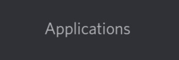
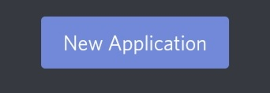
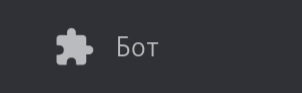
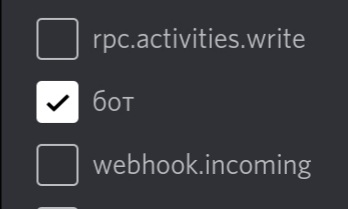
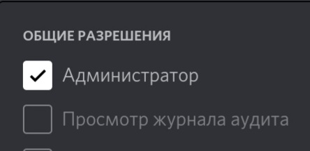
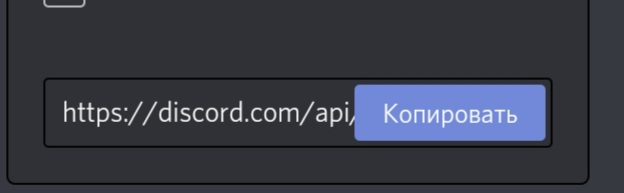
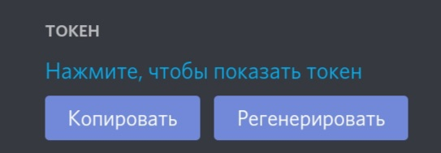

добро пожаловать на сайт о модуле discord. py
здесь вы научитесь его писать
Полный скрипт на модуль discord. py ниже

| 
строки:
import discord
from discord. ext import commands
они обозначают импорт модуля discord. py
а строка
@bot.commands.Bot(command_prefix ='!')
она обозначает префикс команд тоесть с какого знака команда
будет начинатся тоесть у нас в префиксе указан ! знак тоесть
он и будет выодится перед командой
| 
стороки:
@bot.event()
async def on_ready():
print("я готов к работе")
они обозначают то-что после запуска бота в cmd
панели высветится то слово каторое мы указали в ковычках
тоесть там можно писать разные слова каки вам угодно и они
будут высвечиватся при запуске в консоле
| 
строки:
@bot.command()
async def Hellow(ctx):
await ctx.send('hellow')
эти строки самые важные эти строки и делают команды
например во 2 строке написано слово Hellow после слава
def это и есть команда а что вы напишите в 3 строке в скобках
то он и ответит на эту команду
| 
последняя строка:
token.run(you token)
здесь надо место слов "you token" надо вписать ваш
токе бота
надеюсь вам помог написать вашего первого бота
где и как взять токен бота
для начала напишим в гугл или яндекс discord.com
открываем официальный сайт discord и листаем в самый низ
там находим вкладку "разработчикам" и нажимаем на неё
потом нажимаем на три полоски и выберем самый
верхний раздел и нажимаем

потом нажимаем создать бота
| 
вот мы создали бота потом снова нажимаем на три полоски
и выбераем 3 пункт
| 
и там нажимаем добавить бота
хорошо
мы его добавили типерь ниже ставим галочку на слово bot
| 
и ниже на слово администратор
| 
и потом копируем ссылку каторая находится выше
эта ссылка для того чтобы преглосить нашего бата на сервер
вбиваем эту ссылку в поиск и автоматизирунм нашего бота
| 
и типерт самое важно где взять токен надо зайти
во второй пункт и там под аватаркой бота будет ваш
токен вам естаётся его скопировать и вставить в скрипте
| 
| |